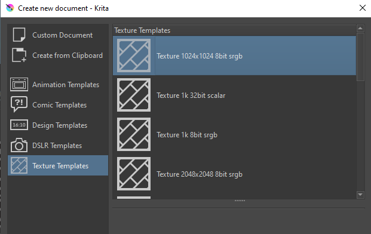
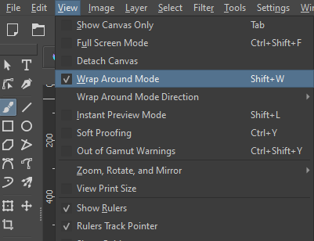

Captains Log 0001
April 1, 2025
Infinite Seamless Patterns
I've used krita quite a bit now and I'm still learning new stuff about it. Recently being that there's a whole mode/template for creating seamless repeating patterns. This is perfect for website or animation backgrounds. Or designing fabric patterns? Anyways it's sooo easy to use, and a lot of fun too. Definitely looking forward to playing around with it some more.
 I did discover one thing I do not like about Krita recently too however. My friend asked me if I could help wrap text around a heart shape for a project they were working on, and I found out krita doesn't actually have that capability. I have no idea why they wouldn't include that feature, it seems like a staple in graphic design to move text to a vector path. Oh well can't complain about free open source software. Still a 10/10 program. I ended up having to download GIMP again because I know it has that feature, as ive used it before years ago. Gimp is pretty good too but Krita is definitely my favourite especially when it comes to animation. Krita has the onion layers which make animating so much nicer